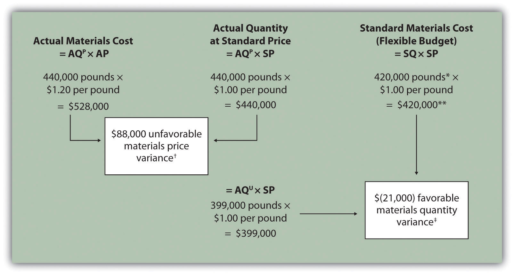
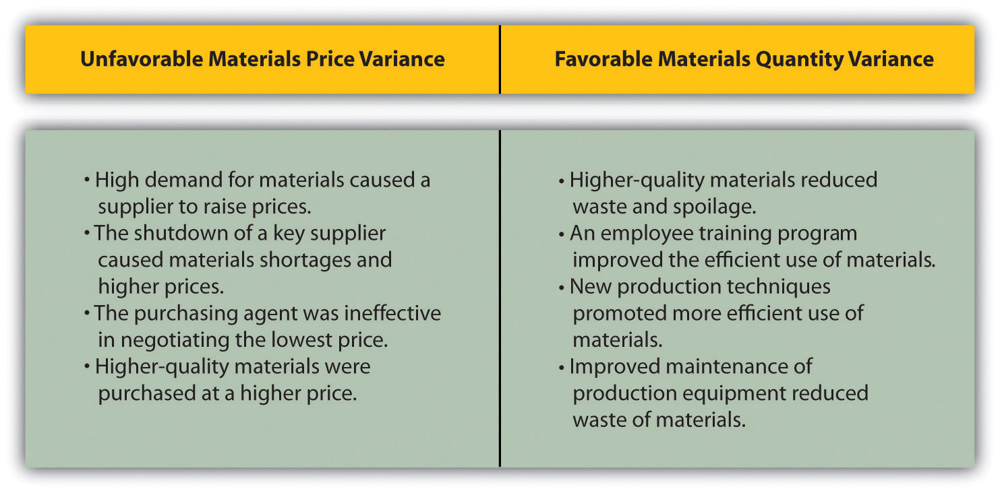
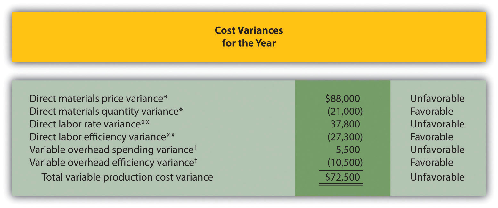
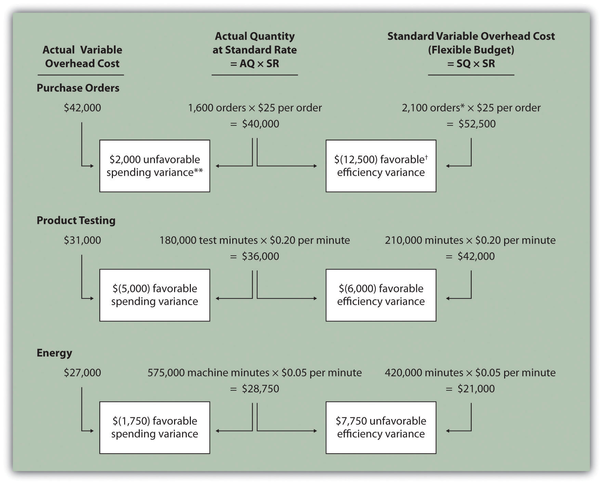
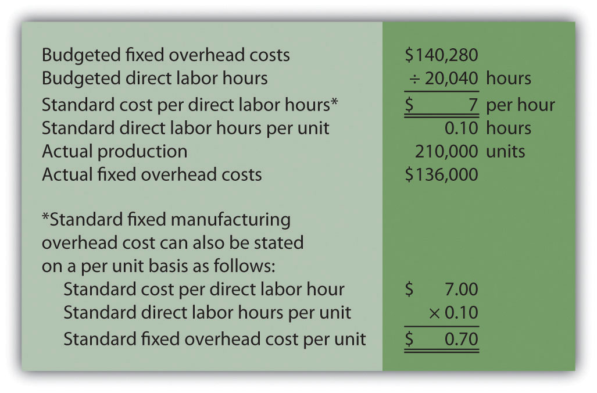
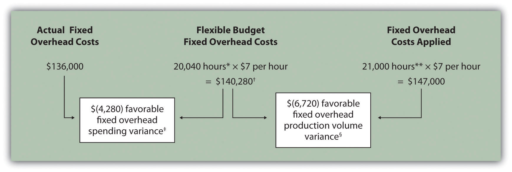
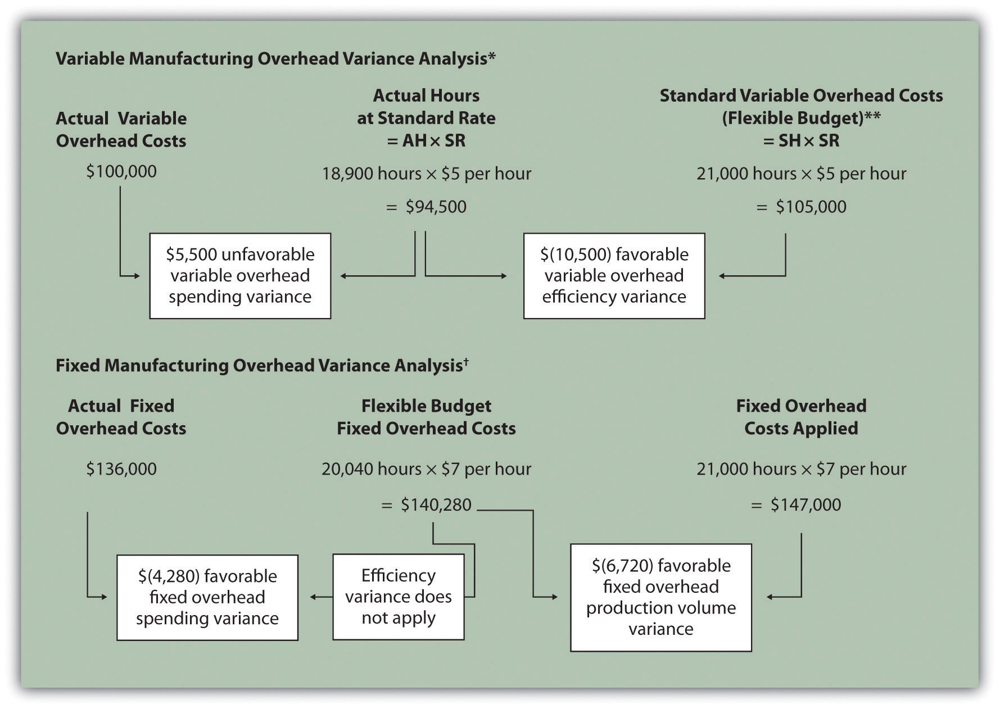

Jerry Feltz, president and owner of Jerry’s Ice Cream, is discussing the results of operations for the year with the company’s management group: Tom, the sales manager; Lynn, the production manager; and Michelle, the treasurer and controller.
| Jerry: | Good work, everyone! It looks as if our sales this past year exceeded the budget! We were expecting to sell 200,000 gallons of ice cream, but it turns out we sold 210,000 gallons. Credit goes to our sales staff for their hard work! |
| Tom: | Thanks, Jerry. We have a great group of salespeople and a terrific product. |
| Jerry: | I agree. I am concerned, however, about our direct labor and direct materials costs. We expected a 5 percent increase in these costs over the original budget since sales were 5 percent higher than anticipated. However, our cost overruns far exceeded the 5 percent increase. We’ve got to get a handle on both of these costs. |
| Lynn: | This doesn’t sound right. My production crew used fewer materials than was budgeted, and the average time it took to make each unit was also less than expected. This should cause materials and labor costs to be lower than expected, not higher. |
| Jerry: | Michelle, are you sure we have the right information here? |
| Michelle: | Absolutely. Total costs for direct labor and direct materials were higher than budgeted, even after considering the increase in sales. |
| Jerry: | Can you give me more detail as to how this happened? I want to know what caused the increase in costs and how to prevent this from taking place in the future. |
| Michelle: | Can I have a week to pull the information together? |
| Jerry: | You’ve got it. |
Jerry is evaluating the performance of his company by comparing actual costs to budgeted costs. This is the control phase of budgeting. We covered the planning phase of budgeting in Chapter 9 "How Are Operating Budgets Created?" by showing how Jerry’s Ice Cream prepared a master budget. The focus of this chapter is on the control phase and how to calculate and analyze cost variances.
Question: The master budget in Chapter 9 "How Are Operating Budgets Created?" was prepared for only one level of activity (activity was measured by the number of units sold, which was budgeted at 200,000 units). Although this works well in the planning phase of budgeting, it is not appropriate for the control phase. Actual sales rarely match budgeted sales. When actual sales differ from budgeted sales, it is inappropriate and perhaps unfair to evaluate employee performance by comparing actual results to the master budget. If actual sales volume is higher than the master budget, variable costs should be higher than the master budget. The opposite is true as well. How do organizations modify the master budget to adjust for actual sales?
Answer: Organizations use a modified budget called a flexible budget. A flexible budgetA revised master budget based on the actual activity level. is simply a revised master budget based on the actual activity level. It represents what costs should be given a certain level of activity. The master budget at Jerry’s Ice Cream was based on sales of 200,000 units and production of 200,400 units. Because actual sales totaled 210,000 units, the flexible budget should be based on 210,000 units of activity. (It should be noted that in Chapter 9 "How Are Operating Budgets Created?", we presented an example with budgeted sales of 200,000 units and budgeted production of 200,400 units resulting from differing beginning and ending finished goods inventory amounts. In this chapter, we assume beginning and ending finished goods inventory are the same, and therefore units produced and sold will be the same. Thus we assume actual sales and actual production total 210,000 units.)
Question: Imagine being the production manager at Jerry’s Ice Cream, and you are evaluated based on the quantity of direct materials used in production. Would it be fair to compare the materials used to produce 210,000 units with the master budget showing the materials that should have been used to produce 200,400 units?
Answer: Probably not. The budget should be adjusted upward to reflect the actual number of units produced before a comparison is made, thus the term flexible budget. As we develop the process of cost variance analysis, we will use flexible budget information. That is, we will revise the master budget for direct materials, direct labor, and variable manufacturing overhead to reflect actual sales volume of 210,000 units. However, we must first describe the concept of standard cost.
What is a flexible budget, and why do companies use a flexible budget to evaluate production managers?
Solution to Review Problem 10.1
A flexible budget is a revised master budget based on the actual activity level achieved for a period. The master budget is established before the period begins for planning purposes, and the flexible budget is established after the period ends for control and evaluation purposes. Production managers are evaluated using the flexible budget because the usage of direct materials, direct labor, and manufacturing overhead will depend on the actual number of units produced.
Question: Companies often use standard costs for planning and control purposes. What are standard costs?
Answer: Standard costsCosts that management expects to incur to provide a good or service and are typically stated as a cost per unit. Standard cost is based on the combination of a price (or rate) standard and quantity (or hours) standard. are costs that management expects to incur to provide a good or service. They serve as the “standard” by which performance will be evaluated. For example, fast-food restaurants have a standard for the length of time it should take to serve a drive-through-window customer. Phone directory operators have a standard length of time it should take to provide a phone number to a customer. Manufacturing companies have a standard quantity of direct materials to be used to produce one unit of product.
Question: What is the difference between standard costs and budgeted costs?
Answer: The term standard cost refers to a specific cost per unit. Budgeted cost refers to costs in total given a certain level of activity. Standard variable production costs at Jerry’s Ice Cream are shown in Figure 10.1 "Standard Costs at Jerry’s Ice Cream".
Figure 10.1 Standard Costs at Jerry’s Ice Cream

*Direct materials standards come from the direct materials purchases budget presented in Chapter 9 "How Are Operating Budgets Created?".
**Direct labor standards come from the direct labor budget presented in Chapter 9 "How Are Operating Budgets Created?".
† Variable overhead costs are applied to products based on direct labor hours. Variable overhead cost per direct labor hour is calculated by dividing total variable overhead costs of $100,200 (from the manufacturing overhead budget in Chapter 9 "How Are Operating Budgets Created?") by 20,040 total direct labor hours (from the direct labor budget in Chapter 9 "How Are Operating Budgets Created?"), which results in a standard variable overhead rate of $5 per direct labor hour.
These standard costs can then be used to establish a flexible budget based on a given level of activity. For example, let’s use Jerry’s actual sales of 210,000 units. The variable production costs expected to produce these units are shown in the flexible budget in Figure 10.2 "Flexible Budget for Variable Production Costs at Jerry’s Ice Cream".
Figure 10.2 Flexible Budget for Variable Production Costs at Jerry’s Ice Cream

The standard cost presented in Figure 10.1 "Standard Costs at Jerry’s Ice Cream" shows the variable production costs expected to produce one unit. The flexible budget in Figure 10.2 "Flexible Budget for Variable Production Costs at Jerry’s Ice Cream" uses the standard cost information to show the variable production costs expected in total given a certain level of activity (210,000 units in this example). Later in the chapter, we compare the flexible budget presented in Figure 10.3 "Flexible Budget" to actual results and analyze the difference. The flexible budget graph presented in Figure 10.3 "Flexible Budget" shows that direct materials have the highest variable production cost at $420,000, followed by direct labor at $273,000 and variable overhead at $105,000.
Figure 10.3 Flexible Budget

Question: What are the components needed to establish a standard cost for direct materials, direct labor, and variable manufacturing overhead?
Answer: Notice in Figure 10.1 "Standard Costs at Jerry’s Ice Cream" that direct materials has two separate standards necessary to calculate the standard cost: standard quantity to produce 1 unit of product (2 pounds) and standard price ($1 per pound). Direct labor has two separate standards as well: standard hours to produce 1 unit of product (0.10 hours) and standard rate ($13 per hour). Variable manufacturing overhead also has 2 separate standards: standard hours to produce 1 unit of product (0.10 direct labor hours) and standard rate ($5 per hour). Thus there are two separate standards necessary to establish each standard cost or six standards in total to establish a standard cost for direct materials, direct labor, and variable manufacturing overhead.
As we explain next, there are many approaches to establishing these six standards for direct materials, direct labor, and variable manufacturing overhead (we discuss fixed manufacturing overhead at the end of this chapter).
Question: How do organizations determine the standard quantity and standard price for direct materials?
Answer: The standard quantity for direct materialsThe quantity of materials required to complete one good unit of product. represents the materials required to complete one good unit of product (i.e., a product with no defects), and it includes an allowance for waste and spoilage. For Jerry’s Ice Cream, the standard quantity of materials needed for each gallon of product is given in the recipe. Jerry’s adds a certain amount to the recipe quantity for waste and spoilage. Similar to this approach, companies might find the standard quantity in the product specifications outlined by product engineers. Some companies review historical production information to determine quantities used in the past and use this information to set standard quantities for the future.
The standard priceThe final delivered cost of materials per unit of measure (e.g., measured in yards or pounds). for direct materials represents the final delivered cost of the materials and includes items such as shipping and insurance. The standard price for materials at Jerry’s comes from the purchase contract negotiated with the company’s supplier. As an alternative to this approach, companies might use historical data or look at price trends in the marketplace.
As shown in Figure 10.1 "Standard Costs at Jerry’s Ice Cream", for Jerry’s Ice Cream, the standard quantity of direct materials is 2 pounds per unit, and the standard price is $1 per pound. Thus the standard cost per unit for direct materials is $2, calculated as follows:
$2 standard cost per unit = 2 pounds per unit × $1 per poundQuestion: How do organizations determine the standard hours and standard rate for direct labor?
Answer: The standard hoursThe direct labor time required to complete one good unit of product. for direct labor represents the direct labor time required to complete one good unit of product and includes an allowance for breaks and production inefficiencies such as machine downtime. Jerry’s Ice Cream established this standard using historical information. In addition to this approach, companies might use time and motion studies performed by engineers who observe production workers and analyze the time required to perform production activities.
The standard rate for direct laborThe average cost of wages and benefits for each hour of direct labor work performed. represents the average cost of wages and benefits for each hour of direct labor work performed. Jerry’s Ice Cream looked at past payroll records to determine this standard. Companies also review labor contracts to estimate the costs associated with direct labor.
As shown in Figure 10.1 "Standard Costs at Jerry’s Ice Cream", for Jerry’s Ice Cream, the standard hours for direct labor is 0.10, and the standard rate is $13 per hour. Thus the standard cost per unit for direct labor is $1.30, calculated as follows:
$1.30 standard cost per unit = 0.10 direct labor hours per unit × $13 per hourQuestion: How do organizations determine the standard quantity and standard rate for variable manufacturing overhead?
Answer: The standard quantity for variable manufacturing overheadThe time, typically measured in direct labor hours or machine hours depending on the allocation base, required to complete one good unit of product. represents the time required to complete one unit of product. This time is often measured in direct labor hours or machine hours, depending on how the company chooses to allocate overhead (recall that we covered the choice of allocation base at length in Chapter 2 "How Is Job Costing Used to Track Production Costs?"). Jerry’s Ice Cream uses direct labor hours to allocate variable manufacturing overhead, so we apply the same standard quantity used for direct labor.
The standard rate for variable manufacturing overheadThe variable portion of the predetermined overhead rate used to allocate overhead cost to products. represents the variable portion of the predetermined overhead rate used to allocate overhead costs to products (see Chapter 2 "How Is Job Costing Used to Track Production Costs?" for further discussion of predetermined overhead rates).
As shown in Figure 10.1 "Standard Costs at Jerry’s Ice Cream", for Jerry’s Ice Cream, the standard quantity of direct labor hours is 0.10, and the standard rate (predetermined overhead rate) is $5 per direct labor hour. Thus the standard cost per unit for variable manufacturing overhead is $0.50, calculated as follows:
$0.50 standard cost per unit = 0.10 direct labor hours per unit × $5 per hourQuestion: In the process of establishing standards, managers must decide between using ideal standards or attainable standards. What is the difference between these two standards?
Answer: Ideal standardsStandards set assuming production conditions are perfect with no inefficiencies. are set assuming production conditions are perfect. For example, ideal standards assume machines never break down, employees are never ill, and materials are never wasted. Although ideal standards may provide motivation for workers to strive for excellence, these standards can also have a negative impact because they may be impossible to achieve.
As an alternative to ideal standards, most managers use attainable standards. Attainable standardsStandards that are more realistic than ideal standards by taking into consideration the likelihood of encountering problems in production such as machine downtime, materials waste, and employee illness. take into consideration the likelihood of encountering problems in production such as machine downtime, electricity outages, materials waste, and employee illnesses. Most managers feel attainable standards have a positive behavioral impact on workers because the standards are reasonable and attainable under normal production conditions. We assume the use of attainable standards throughout this chapter.
Question: How are standards used to control operations?
Answer: Companies typically use standards to analyze the difference between budgeted costs and actual costs. The process of analyzing differences between standard costs and actual costs is called variance analysisUsing standards to analyze the difference between budgeted costs and actual costs.. Managerial accountants perform variance analysis for costs including direct materials, direct labor, and manufacturing overhead.
Standard costs are also used to determine product costs. Companies using standard costing systems are able to estimate product costs without having to wait for actual product cost data, and they often record transactions using standard cost information. The appendix shows how this process works using journal entries.

Source: Photo courtesy of Keith Allison, http://www.flickr.com/photos/keithallison/2310444991/.
Controlling Costs in the NBA
The National Basketball Association (NBA) imposes a “salary cap” that dictates a maximum dollar amount each team can pay its players collectively in one season. The salary cap is based on a percentage of basketball-related income and was set at $57,700,000 per team for the 2009–10 season. This serves as the cost budget for player payroll. However, “salary exceptions” allow many teams to exceed the salary cap.
Annual salaries for some of the highest paid players for the 2009–10 season are shown as follows:
Imagine being the manager of the Boston Celtics and having to pay one player almost half of your entire budget! Clearly, controlling costs in this type of business environment is a challenge, and budgeting is a crucial element in achieving financial success.
Source: InsideHoops.com, “Home Page,” http://www.insidehoops.com.
Recall from the review problems in Chapter 9 "How Are Operating Budgets Created?" that Carol’s Cookies produces cookies for resale at grocery stores throughout North America. We established a master budget indicating Carol expects to use 1.5 pounds of direct materials for each unit produced at a cost of $2 per pound (1 unit = 1 batch of cookies). Each unit produced will require 0.20 direct labor hours at a cost of $12 per hour. Variable manufacturing overhead is applied based on direct labor hours at a rate of $3.50 per hour. Last year’s sales were expected to total 400,000 units.
Carol just received last year’s actual results showing sales of 390,000 units.
Solution to Review Problem 10.2


Question: In the dialogue at the beginning of the chapter, the president of Jerry’s Ice Cream was concerned about significant cost overruns for direct materials. We cannot simply explain these costs by saying that “we paid too much for materials” or “too many materials were used in production.” Variances must be calculated to identify the exact cause of the cost overrun. What variances are used to analyze the difference between actual direct material costs and standard direct material costs?
Answer: The difference between actual costs and standard (or budgeted) costs is typically explained by two separate variances: the materials price variance and materials quantity variance. The materials price varianceThe difference between actual costs for materials purchased and budgeted costs based on the standards. is the difference between actual costs for materials purchased and budgeted costs based on the standards. The materials quantity varianceThe difference between the actual quantity of materials used in production and budgeted materials that should have been used in production based on the standards. is the difference between the actual quantity of materials used in production and budgeted materials that should have been used in production based on the standards.
To this point, we have provided the data for Jerry’s Ice Cream necessary to calculate standard costs. However, you must also have the actual materials cost and materials quantity data to calculate the variances described previously. The actual data for the year are as follows:
| Sales volume | 210,000 units |
| Direct materials purchased | 440,000 pounds |
| Cost of direct materials purchased | $1.20 per pound |
| Direct materials used in production | 399,000 pounds |
Recall from Figure 10.1 "Standard Costs at Jerry’s Ice Cream" that the direct materials standard price for Jerry’s is $1 per pound, and the standard quantity of direct materials is 2 pounds per unit. Figure 10.4 "Direct Materials Variance Analysis for Jerry’s Ice Cream" shows how to calculate the materials price and quantity variances given the actual results and standards information. Review this figure carefully before moving on to the next section where these calculations are explained in detail.
Figure 10.4 Direct Materials Variance Analysis for Jerry’s Ice Cream
Note: AQP = Actual quantity of materials purchased. AP = Actual price of materials. AQU = Actual quantity of materials used in production. SP = Standard price of materials. SQ = Standard quantity of materials for actual level of activity.
*Standard quantity of 420,000 pounds = Standard of 2 pounds per unit × 210,000 actual units produced and sold.
**$420,000 standard direct materials cost matches the flexible budget presented in Note 10.18 "Review Problem 10.2".
† $88,000 unfavorable materials price variance = $528,000 – $440,000. Variance is unfavorable because the actual price of $1.20 is higher than the expected (budgeted) price of $1.
‡ $(21,000) favorable materials quantity variance = $399,000 – $420,000. Variance is favorable because the actual quantity of materials used in production of 399,000 pounds is lower than the expected (budgeted) quantity of 420,000 pounds.
Question: The materials price variance answers the question, did we spend more or less on direct materials than expected? If the variance is unfavorable, we spent more than expected. If the variance is favorable, we spent less than expected. How is the materials price variance calculated?
Answer: As shown in Figure 10.4 "Direct Materials Variance Analysis for Jerry’s Ice Cream", the materials price variance is the difference between the actual quantity of materials purchased at the actual price and the actual quantity of materials purchased at the standard price:
Alternative Calculation. Since we are holding the actual quantity constant and evaluating the difference between actual price and standard price, the materials price variance calculation can be simplified as follows:
Note that both approaches—the direct materials price variance calculation and the alternative calculation—yield the same result.
When labeling the variances calculated in this chapter, notice that all positive variances are unfavorable and all negative variances are favorable (i.e., unfavorable cost variances increase expected costs and favorable cost variances decrease expected costs). As you calculate variances, you should think through the variance to confirm whether it is favorable or unfavorable. For example, the materials price variance calculation presented previously shows the actual price paid for materials was $1.20 per pound and the standard price was $1. Clearly, this is unfavorable because the actual price was higher than the expected (budgeted) price.
Question: The materials quantity variance answers the question, did we use more or fewer direct materials in production than expected? If the variance is unfavorable, we used more than expected. If the variance is favorable, we used fewer than expected. How is the materials quantity variance calculated?
Answer: As shown in Figure 10.4 "Direct Materials Variance Analysis for Jerry’s Ice Cream", the materials quantity variance is the difference between the actual quantity of materials used in production at the standard price and the standard quantity of materials allowed at the standard price:
The standard quantity of 420,000 pounds is the quantity of materials allowed given actual production. For Jerry’s Ice Cream, the standard quantity of materials per unit of production is 2 pounds per unit. Thus the standard quantity (SQ) of 420,000 pounds is 2 pounds per unit × 210,000 units produced and sold.
Alternative Calculation. Since we are holding the standard price constant and evaluating the difference between actual quantity used and standard quantity, the materials quantity variance calculation can be simplified as follows:
Note that both approaches—the direct materials quantity variance calculation and the alternative calculation—yield the same result.
The materials quantity variance calculation presented previously shows the actual quantity used in production of 399,000 pounds is lower than the expected (budgeted) quantity of 420,000 pounds. Clearly, this is favorable because the actual quantity used was lower than the expected (budgeted) quantity.
Question: The managerial accountant at Jerry’s Ice Cream will likely investigate the cause of the unfavorable materials price variance of $88,000. This will lead to discussions with the purchasing department. What might have caused the $88,000 unfavorable materials price variance?
Answer: The left panel of Figure 10.5 "Possible Causes of Direct Materials Variances for Jerry’s Ice Cream" contains some possible explanations for this variance.
Figure 10.5 Possible Causes of Direct Materials Variances for Jerry’s Ice Cream
Whatever the cause of this unfavorable variance, Jerry’s Ice Cream will likely take action to improve the cost problem identified in the materials price variance analysis. This is why we use the term control phase of budgeting to describe variance analysis. Through variance analysis, companies are able to identify problem areas (material costs for Jerry’s) and consider alternatives to controlling costs in the future.
Question: Jerry’s Ice Cream might also choose to investigate the $21,000 favorable materials quantity variance. Although this could be viewed as good news for the company, management may want to know why this favorable variance occurred. What might have caused the $21,000 favorable materials quantity variance?
Answer: The right panel of Figure 10.5 "Possible Causes of Direct Materials Variances for Jerry’s Ice Cream" contains some possible explanations for this variance.
Notice how the cause of one variance might influence another variance. For example, the unfavorable price variance at Jerry’s Ice Cream might have been a result of purchasing high-quality materials, which in turn led to less waste in production and a favorable quantity variance. This also might have a positive impact on direct labor, as less time will be spent dealing with materials waste.
Note 10.26 "Business in Action 10.2" illustrates just how important it is to track direct materials variances accurately.
The Effect of Rising Materials Costs on Auto Suppliers
In the first six months of 2004, steel prices increased 76 percent, from $350 a ton to $617 a ton. For auto suppliers that use hundreds of tons of steel each year, this had the unexpected effect of increasing expenses and reducing profits. For example, a major producer of automotive wheels had to reduce its annual earnings forecast by $10,000,000 to $15,000,000 as a result of the increase in steel prices.
Most auto part suppliers operate with very small margins. GR Spring and Stamping, Inc., a supplier of stampings to automotive companies, was generating pretax profit margins of about 3 percent prior to the increase in steel prices. Profit margins have been cut in half since steel prices began rising.
These thin margins are the reason auto suppliers examine direct materials variances so carefully. Any unexpected increase in steel prices will likely cause significant unfavorable materials price variances, which will lead to lower profits. Auto part suppliers that rely on steel will continue to scrutinize materials price variances and materials quantity variances to control costs, particularly in a period of rising steel prices.
Source: Brett Clanton, “Steel Costs Slam Auto Suppliers,” The Detroit News, June 29, 2004, http://www.detnews.com.
Question: Why are variances labeled favorable or unfavorable?
Answer: The terms favorable and unfavorable relate to the impact the variance has on budgeted operating profit. A favorable varianceA variance that has a positive impact on operating profit. has a positive impact on operating profit. An unfavorable varianceA variance that has a negative impact on operating profit. has a negative impact on operating profit. Companies using a standard cost system ultimately credit favorable variances and debit unfavorable variances to income statement accounts. The appendix to this chapter describes this process in further detail.
Carol’s Cookies expected to use 1.5 pounds of direct materials to produce 1 unit (batch) of product at a cost of $2 per pound. Actual results are in for last year, which indicates 390,000 batches of cookies were sold. The company purchased 640,000 pounds of materials at $1.80 per pound and used 624,000 pounds in production.
Solution to Review Problem 10.3
As shown in the following, the materials price variance is $(128,000) favorable, and the materials quantity variance is $78,000 unfavorable.
Note: AQP = Actual quantity of materials purchased. AP = Actual price of materials. AQU = Actual quantity of materials used in production. SP = Standard price of materials. SQ = Standard quantity of materials for actual level of activity.
*Standard quantity of 585,000 pounds = Standard of 1.5 pounds per unit × 390,000 actual units produced and sold.
**$1,170,000 standard direct materials cost matches the flexible budget presented in Note 10.18 "Review Problem 10.2", part 2.
† $(128,000) favorable materials price variance = $1,152,000 – $1,280,000. Variance is favorable because the actual price of $1.80 is lower than the expected (budgeted) price of $2
‡ $78,000 unfavorable materials quantity variance = $1,248,000 – $1,170,000. Variance is unfavorable because the actual quantity of materials used in production of 624,000 pounds is higher than the expected (budgeted) quantity of 585,000 pounds.
Alternative direct materials variance calculations:
Possible causes of favorable materials price variance are
Possible causes of unfavorable materials quantity variance are
Question: In addition to investigating the causes of cost overruns for direct materials, the president of Jerry’s Ice Cream wants to know why there were cost overruns for direct labor. What variances are used to analyze these types of direct labor cost overruns?
Answer: Similar to direct materials variances, direct labor variance analysis involves two separate variances: the labor rate variance and labor efficiency variance. The labor rate varianceThe difference between actual costs for direct labor and budgeted costs based on the standards. is the difference between actual costs for direct labor and budgeted costs based on the standards. The labor efficiency varianceThe difference between the actual number of direct labor hours worked and budgeted direct labor hours that should have been worked based on the standards. is the difference between the actual number of direct labor hours worked and budgeted direct labor hours that should have been worked based on the standards.
At Jerry’s Ice Cream, the actual data for the year are as follows:
| Sales volume | 210,000 units |
| Direct labor hours worked | 18,900 hours |
| Cost of direct labor | $15 per hour |
Recall from Figure 10.1 "Standard Costs at Jerry’s Ice Cream" that the standard rate for Jerry’s is $13 per direct labor hour and the standard direct labor hours is 0.10 per unit. Figure 10.6 "Direct Labor Variance Analysis for Jerry’s Ice Cream" shows how to calculate the labor rate and efficiency variances given the actual results and standards information. Review this figure carefully before moving on to the next section where these calculations are explained in detail.
Figure 10.6 Direct Labor Variance Analysis for Jerry’s Ice Cream

Note: AH = Actual hours of direct labor. AR = Actual rate incurred for direct labor. SR = Standard rate for direct labor. SH = Standard hours of direct labor for actual level of activity.
*Standard hours of 21,000 = Standard of 0.10 hours per unit × 210,000 actual units produced and sold.
**$273,000 standard direct labor cost matches the flexible budget presented in Figure 10.2 "Flexible Budget for Variable Production Costs at Jerry’s Ice Cream".
† $37,800 unfavorable labor rate variance = $283,500 – $245,700. Variance is unfavorable because the actual rate of $15 is higher than the expected (budgeted) rate of $13.
‡ $(27,300) favorable labor efficiency variance = $245,700 – $273,000. Variance is favorable because the actual hours of 18,900 are lower than the expected (budgeted) hours of 21,000.
Question: The direct labor rate variance answers the question, did we spend more or less on direct labor than expected? If the variance is unfavorable, we spent more than expected. If the variance is favorable, we spent less than expected. How is the labor rate variance calculated?
Answer: As shown in Figure 10.6 "Direct Labor Variance Analysis for Jerry’s Ice Cream", the labor rate variance is the difference between the actual hours worked at the actual rate and the actual hours worked at the standard rate:
Alternative Calculation. Because we are holding the actual hours constant and evaluating the difference between actual rate and standard rate, the labor rate variance calculation can be simplified as follows:
Note that both approaches—direct labor rate variance calculation and the alternative calculation—yield the same result.
As with direct materials variances, all positive variances are unfavorable, and all negative variances are favorable. The labor rate variance calculation presented previously shows the actual rate paid for labor was $15 per hour and the standard rate was $13. This results in an unfavorable variance since the actual rate was higher than the expected (budgeted) rate.
Question: The direct labor efficiency variance answers the question, did we use more or less direct labor hours in production than expected? If the variance is unfavorable, we used more than expected. If the variance is favorable, we used less than expected. How is the labor efficiency variance calculated?
Answer: As shown in Figure 10.6 "Direct Labor Variance Analysis for Jerry’s Ice Cream", the labor efficiency variance is the difference between the actual hours worked at the standard rate and the standard hours at the standard rate:
The 21,000 standard hours are the hours allowed given actual production. For Jerry’s Ice Cream, the standard allows for 0.10 labor hours per unit of production. Thus the 21,000 standard hours (SH) is 0.10 hours per unit × 210,000 units produced.
Alternative Calculation. Because we are holding the standard rate constant and evaluating the difference between actual hours worked and standard hours, the labor efficiency variance calculation can be simplified as follows:
Note that both approaches—the direct labor efficiency variance calculation and the alternative calculation—yield the same result.
The labor efficiency variance calculation presented previously shows that 18,900 in actual hours worked is lower than the 21,000 budgeted hours. Clearly, this is favorable since the actual hours worked was lower than the expected (budgeted) hours.
Question: The managerial accountant at Jerry’s Ice Cream is interested in finding the cause of the unfavorable labor rate variance of $37,800. Jerry’s Ice Cream might also choose to investigate the $27,300 favorable labor efficiency variance. Although this could be viewed as good news for the company, management may want to know why this favorable variance occurred. What might have caused the $37,800 unfavorable labor rate variance and $27,300 favorable labor efficiency variance?
Answer: Figure 10.7 "Possible Causes of Direct Labor Variances for Jerry’s Ice Cream" contains some possible explanations for the labor rate variance (left panel) and labor efficiency variance (right panel).
Figure 10.7 Possible Causes of Direct Labor Variances for Jerry’s Ice Cream

As mentioned earlier, the cause of one variance might influence another variance. For example, many of the explanations shown in Figure 10.7 "Possible Causes of Direct Labor Variances for Jerry’s Ice Cream" might also apply to the favorable materials quantity variance.
We have demonstrated how important it is for managers to be aware not only of the cost of labor, but also of the differences between budgeted labor costs and actual labor costs. This awareness helps managers make decisions that protect the financial health of their companies.
Labor Costs in the Airline Industry
United Airlines asked a bankruptcy court to allow a one-time 4 percent pay cut for pilots, flight attendants, mechanics, flight controllers, and ticket agents. The pay cut was proposed to last as long as the company remained in bankruptcy and was expected to provide savings of approximately $620,000,000. How would this unforeseen pay cut affect United’s direct labor rate variance? The direct labor rate variance would likely be favorable, perhaps totaling close to $620,000,000, depending on how much of these savings management anticipated when the budget was first established.
After filing for Chapter 11 bankruptcy in December 2002, United cut close to $5,000,000,000 in annual expenditures. As a result of these cost cuts, United was able to emerge from bankruptcy in 2006.
Source: Associated Press, “United May Seek End to Union Contracts,” USA Today, November 25, 2004.
Jerry (president and owner), Tom (sales manager), Lynn (production manager), and Michelle (treasurer and controller) were at the meeting described at the opening of this chapter. Michelle was asked to find out why direct labor and direct materials costs were higher than budgeted, even after factoring in the 5 percent increase in sales over the initial budget. Lynn was surprised to learn that direct labor and direct materials costs were so high, particularly since actual materials used and actual direct labor hours worked were below budget.
The group met again a week later to discuss the issue.
| Jerry: | Michelle, what do you have for us? |
| Michelle: | My staff has been working hard to identify why direct materials and direct labor costs were higher than expected. First, I would like to confirm that these costs were indeed higher than anticipated. |
| Lynn: | I still don’t see how this can be. My production crew was as efficient with their time and materials as they’ve ever been. |
| Michelle: | You’re right, Lynn. Our variance analysis shows a favorable direct materials quantity variance, which relates directly to the amount of materials used, and a favorable direct labor efficiency variance, which relates directly to the efficiency of our production workers. Both variances are good news. |
| Jerry: | Then why are our direct labor and direct materials costs so high? |
| Michelle: | The answer relates directly to the price we paid for materials, and the hourly rates we paid for labor. Both were higher than expected. We expected to pay $1 per pound for direct materials, but actually paid $1.20 per pound. In addition, we expected to pay $13 an hour for direct labor when in fact we actually paid $15 an hour. This means we paid 20 percent more than expected for direct materials, which is $0.20 divided by $1, and 15 percent more than expected for direct labor, which is $2 divided by $13. |
| Lynn: | I do recall Tony over in purchasing telling me he obtained some premium materials for our ice cream, and I know we hired some relatively experienced workers who were paid a bit more than the normal starting rate. |
| Tom: | This might explain why our customers were thrilled about our product. The materials were high quality and the production workers really knew their stuff! |
| Jerry: | While I like the end result of a higher-quality product and increased sales, we must do a better job of controlling costs. Perhaps Tony can negotiate a better price for materials. I don’t mind paying our employees a higher wage based on their experience, but let’s make sure we get some efficiency savings in the process to help offset the higher wages. Michelle, can we continue to monitor material and labor costs? |
| Michelle: | Yes. I’ll have my staff analyze material and labor variances monthly, and I’ll have a report ready at the end of each month for you and Lynn. |
| Jerry: | Excellent! Lynn, let our production crew know they are doing a fine job, and continue to encourage them to find ways to improve the efficiency of production. I’ll talk with Tony about the possibility of getting a better deal on materials. |
As stated earlier, variance analysis is the control phase of budgeting. Using variance analysis for direct materials and direct labor, Jerry’s Ice Cream was able to identify strong points in its operations (quantity of materials used and efficiency of direct labor workforce), and perhaps more important, Jerry’s was able to identify problem areas (price paid for materials and wages paid to employees). This information gives the management a way to monitor and control production costs. Next, we calculate and analyze variable manufacturing overhead cost variances.
Carol’s Cookies expected to use 0.20 direct labor hours to produce 1 unit (batch) of product at a cost of $12 per hour. Actual results are in for last year, which indicates 390,000 batches of cookies were sold. The company’s direct labor workforce worked 97,500 hours at $11 per hour.
Solution to Review Problem 10.4
As shown in the following, the labor rate variance is $(97,500) favorable, and the labor efficiency variance is $234,000 unfavorable.

Note: AH = Actual hours of direct labor. AR = Actual rate incurred for direct labor. SR = Standard rate for direct labor. SH = Standard hours of direct labor for actual level of activity.
*Standard hours of 78,000 = Standard of 0.20 hours per unit × 390,000 actual units produced and sold.
**$936,000 standard direct labor cost matches the flexible budget presented in Note 10.18 "Review Problem 10.2", part 2.
† $(97,500) favorable labor rate variance = $1,072,500 – $1,170,000. Variance is favorable because the actual rate of $11 is lower than the expected (budgeted) rate of $12.
‡ $234,000 unfavorable labor efficiency variance = $1,170,000 – $936,000. Variance is unfavorable because the actual hours of 97,500 are higher than the expected (budgeted) hours of 78,000.
The following are alternative direct labor variance calculations:
Possible causes of favorable labor rate variance are
Possible causes of unfavorable labor efficiency variance are
Question: Similar to direct materials and direct labor variances, variable manufacturing overhead variance analysis involves two separate variances. What are the two variances used to analyze the difference between actual variable overhead costs and standard variable overhead costs?
Answer: The two variances used to analyze this difference are the spending variance and efficiency variance. The variable overhead spending varianceThe difference between actual costs for variable overhead and budgeted costs based on the standards. is the difference between actual costs for variable overhead and budgeted costs based on the standards. For a company that allocates variable manufacturing overhead to products based on direct labor hours, the variable overhead efficiency varianceThe difference between the actual activity level in the allocation base (often direct labor hours or machine hours) and the budgeted activity level in the allocation base according to the standards. is the difference between the number of direct labor hours actually worked and what should have been worked based on the standards.
At Jerry’s Ice Cream, the actual data for the year are as follows:
| Sales volume | 210,000 units |
| Direct labor hours worked | 18,900 hours |
| Total cost of variable overhead | $100,000 |
Recall from Figure 10.1 "Standard Costs at Jerry’s Ice Cream" that the variable overhead standard rate for Jerry’s is $5 per direct labor hour and the standard direct labor hours is 0.10 per unit. Figure 10.8 "Variable Manufacturing Overhead Variance Analysis for Jerry’s Ice Cream" shows how to calculate the variable overhead spending and efficiency variances given the actual results and standards information. Review this figure carefully before moving on to the next section where these calculations are explained in detail.
Figure 10.8 Variable Manufacturing Overhead Variance Analysis for Jerry’s Ice Cream

Note: AH = Actual hours of direct labor. (This measure will depend on the allocation base that the company uses. Jerry’s uses direct labor hours to allocate variable manufacturing overhead, so AH refers to actual direct labor hours.) SR = Standard variable manufacturing overhead rate per direct labor hour. SH = Standard hours of direct labor for actual level of activity.
*Since variable overhead is not purchased per direct labor hour, the actual rate (AR) is not used in this calculation. Simply use the total cost of variable manufacturing overhead instead.
**Standard hours of 21,000 = Standard of 0.10 hours per unit × 210,000 actual units produced and sold.
† $105,000 standard variable overhead costs matches the flexible budget presented in Figure 10.2 "Flexible Budget for Variable Production Costs at Jerry’s Ice Cream".
‡ $5,500 unfavorable variable overhead spending variance = $100,000 – $94,500. Variance is unfavorable because the actual variable overhead costs are higher than the expected costs given actual hours of 18,900.
§ $(10,500) favorable variable overhead efficiency variance = $94,500 – $105,000. Variance is favorable because the actual hours of 18,900 are lower than the expected (budgeted) hours of 21,000.
Question: How is the variable overhead spending variance calculated?
Answer: As shown in Figure 10.8 "Variable Manufacturing Overhead Variance Analysis for Jerry’s Ice Cream", the variable overhead spending variance is the difference between what is actually paid for variable overhead and what should have been paid according to the standards:
As with direct materials and direct labor variances, all positive variances are unfavorable, and all negative variances are favorable. Note that there is no alternative calculation for the variable overhead spending variance because variable overhead costs are not purchased per direct labor hour. Thus actual rate (AR) is not used for this variance.
This variance is unfavorable for Jerry’s Ice Cream because actual costs of $100,000 are higher than expected costs of $94,500.
Question: How is the variable overhead efficiency variance calculated?
Answer: As shown in Figure 10.8 "Variable Manufacturing Overhead Variance Analysis for Jerry’s Ice Cream", the variable overhead efficiency variance is the difference between the actual hours worked at the standard rate and the standard hours at the standard rate:
The 21,000 standard hours are the hours allowed given actual production (= 0.10 standard hours allowed per unit × 210,000 units produced). Since actual direct labor hours worked total 18,900, the variable manufacturing overhead costs should be lower than initially anticipated at 21,000 standard hours. (This assumes variable overhead costs are truly driven by direct labor hours!) This results in a favorable variable overhead efficiency variance.
Alternative Calculation. Since we are holding the standard rate constant and evaluating the difference between actual hours worked and standard hours, the variable overhead efficiency variance calculation can be simplified as follows:
Note that both approaches—the variable overhead efficiency variance calculation and the alternative calculation—yield the same result.
The variable overhead efficiency variance calculation presented previously shows that 18,900 in actual hours worked is lower than the 21,000 budgeted hours. Again, this variance is favorable because working fewer hours than expected should result in lower variable manufacturing overhead costs.
Question: The managerial accountant at Jerry’s Ice Cream is interested in finding the cause of the unfavorable variable overhead spending variance of $5,500. The spending variance can result from variances in the cost of variable overhead items and the usage of these items. What might have caused the $5,500 unfavorable variable overhead spending variance?
Answer: The left panel of Figure 10.9 "Possible Causes of Variable Manufacturing Overhead Variances for Jerry’s Ice Cream" contains some possible explanations for Jerry’s unfavorable overhead spending variance.
Figure 10.9 Possible Causes of Variable Manufacturing Overhead Variances for Jerry’s Ice Cream

Question: Jerry’s Ice Cream might also choose to investigate the $10,500 favorable variable overhead efficiency variance. What might have caused the $10,500 favorable variable overhead efficiency variance?
Answer: The focus here is on the activity base used to allocate overhead. Since Jerry’s uses direct labor hours as the activity base, the possible explanations for this variance are linked to efficiencies or inefficiencies in the use of direct labor. The right panel of Figure 10.9 "Possible Causes of Variable Manufacturing Overhead Variances for Jerry’s Ice Cream" contains some possible explanations for this variance.
Again, this analysis is appropriate assuming direct labor hours truly drives the use of variable overhead activities. That is, we assume that an increase in direct labor hours will increase variable overhead costs and that a decrease in direct labor hours will decrease variable overhead costs.
Hiding Fraud in Overhead Accounts
The controller of a small, closely held manufacturing company embezzled close to $1,000,000 over a 3-year period. With annual revenues of $30,000,000 and less than 100 employees, the company certainly felt the impact of losing $1,000,000.
The forensic accountant who investigated the fraud identified several suspicious transactions, all of which were charged to the manufacturing overhead account. To prevent this type of fraud in the future, the forensic accountant recommended that “significant manufacturing overhead variances be analyzed both within and across time periods to identify anomalies.” Apparently, the company was not closely monitoring manufacturing overhead variances when the fraud occurred.
Source: John B. MacArthur, Bobby E. Waldrup, and Gary R. Fane, “Caution: Fraud Overhead,” Strategic Finance, October 2004, 28–32.
Carol’s Cookies expected to use 0.20 direct labor hours to produce 1 unit (batch) of product, and the variable overhead rate is $3.50 per hour. Actual results are in for last year, which indicates 390,000 batches of cookies were produced and sold. The company’s direct labor workforce worked 97,500 hours, and variable overhead costs totaled $360,000.
Solution to Review Problem 10.5
As shown in the following, the variable overhead spending variance is $18,750 unfavorable, and the variable overhead efficiency variance is $68,250 unfavorable.

AH = Actual hours of direct labor. SR = Standard variable manufacturing overhead rate per direct labor hour. SH = Standard hours of direct labor for actual level of activity.
*Since variable overhead is not purchased per direct labor hour, the actual rate (AR) is not used in this calculation. Simply use the total cost of variable manufacturing overhead instead.
**Standard hours of 78,000 = Standard of 0.20 hours per unit × 390,000 actual units produced and sold.
† $273,000 standard variable overhead costs match the flexible budget presented in Note 10.18 "Review Problem 10.2", part 2.
‡ $18,750 unfavorable variable overhead spending variance = $360,000 – $341,250. Variance is unfavorable because the actual variable overhead costs are higher than the expected costs given actual hours of 97,500.
§ $68,250 unfavorable variable overhead efficiency variance = $341,250 – $273,000. Variance is unfavorable because the actual hours of 97,500 are higher than the expected (budgeted) hours of 78,000.
Possible causes of unfavorable variable overhead spending variance are
Possible causes of unfavorable variable overhead efficiency variance are
Question: Companies rarely investigate all variances because there is a cost associated with identifying the causes of variances. This cost involves employees who spend time talking with personnel from areas including purchasing and production to determine why variances occurred and how to control costs in the future. What can managers do to reduce the cost of investigating variances?
Answer: Managers typically establish criteria to determine which variances to focus on rather than simply investigating all variances. This is called management by exception. Management by exceptionA term used to describe managers who focus solely on variances showing actual results that are significantly different than expected results. describes managers who focus solely on variances that are significant.
Question: Figure 10.14 "Comparison of Variable and Fixed Manufacturing Overhead Variance Analysis for Jerry’s Ice Cream" summarizes the cost variances calculated for Jerry’s Ice Cream. If you were in charge of investigating variances at Jerry’s Ice Cream, how would you determine which variances to focus on and which to ignore?
Figure 10.10 Summary of Cost Variances at Jerry’s Ice Cream
*From Figure 10.4 "Direct Materials Variance Analysis for Jerry’s Ice Cream".
**From Figure 10.6 "Direct Labor Variance Analysis for Jerry’s Ice Cream".
† From Figure 10.8 "Variable Manufacturing Overhead Variance Analysis for Jerry’s Ice Cream".
Answer: Some managers might review all unfavorable variances. However, the variable overhead spending variance of $5,500 is not very significant relative to the other variances and may not be worth investigating. Also, by focusing solely on unfavorable variances, managers might overlook problems that may result from favorable variances.
Another approach might be to investigate all favorable and unfavorable variances above a certain minimum level, calculated as a percent of the flexible budget amount. For example, management could establish a policy to investigate all variances at or above 10 percent of the flexible budget amount for each cost. At Jerry’s Ice Cream, this would mean investigating all variances at or above $42,000 for direct materials (= 10 percent × $420,000), $27,300 for direct labor (= 10 percent × $273,000), and $10,500 for variable overhead (= 10 percent × $105,000). Based on this policy, the following variances would be investigated:
Many companies calculate and investigate variances weekly, monthly, or quarterly and focus on trends. In this case, they may only investigate variances that are unfavorable and increasing over time.
Whatever the approach, managers understand that investigating variances requires resources. Thus managers must establish an efficient and cost-effective approach to analyzing variances by weighing the benefits derived from investigating variances against the costs incurred to perform the analysis.
Using Cost Variances to Detect Fraud
Variance analysis is not only an effective way to control costs; some companies, including The Dow Chemical Company, have found that investigating variances can also help them detect fraudulent activities. Dow, which provides chemical, plastic, and agricultural products to customers in 180 countries, has annual sales of $33,000,000,000 and approximately 46,000 employees. In 1998, the company created a department called Fraud Investigative Services (FIS) whose mission is to “deter and prevent incidents of fraud and financial abuse through detection, investigation, and education.”
The most common types of fraud allegations reviewed by Dow’s FIS include expense report fraud, kickback schemes, and embezzlement. Paul Zikmund, the director of FIS, states that “unexplainable cost variances between budget and actual amounts” are among the warning signs he looks for in identifying fraud.
For example, suppose the actual cost for direct materials is significantly higher than the budgeted cost. The cost accountant at Dow would begin investigating the cause of the variance by talking with the company’s purchasing agent. The purchasing agent might be unable (or unwilling) to explain why actual costs are so high. Further investigation might indicate that the purchasing agent was intentionally overbilling the vendor and receiving a kickback from the vendor.
Zikmund states that for every $1 that Dow spends on investigating fraud, the company recovers nearly $4. He also notes that Dow’s loss per employee is far below the industry average of $9 per employee per day. For a company with 46,000 employees, every dollar in savings per employee adds up to a significant amount.
Sources: Paul Zikmund, “Ferreting out Fraud,” Strategic Finance, April 2003, 1–4; Dow Chemical Company, “Home Page,” http://www.dow.com.
Use the solutions to Note 10.30 "Review Problem 10.3", Note 10.40 "Review Problem 10.4", and Note 10.49 "Review Problem 10.5" to complete the following:
Solution to Review Problem 10.6
See the following figure.
*From Note 10.30 "Review Problem 10.3".
**From Note 10.40 "Review Problem 10.4".
† From Note 10.49 "Review Problem 10.5".
Based on this policy, the following variances would be investigated:
Question: As discussed in Chapter 3 "How Does an Organization Use Activity-Based Costing to Allocate Overhead Costs?", activity-based costing focuses on identifying activities required to make a product, forming cost pools for each activity, and allocating overhead costs to products based on the products’ use of each activity. Rather than establishing one standard variable overhead rate and standard quantity based on one cost driver, activity-based costing establishes several standard variable overhead rates and quantities, each having its own cost driver. How would variance analysis be implemented for a company that uses activity-based costing?
Answer: Regardless of whether a company uses the traditional costing approach or an activity-based costing approach, the process of performing variance analysis is the same. Similar to the traditional costing approach, the variable overhead spending variance for activity-based costing is calculated for each activity as follows:
The variable overhead efficiency variance is calculated for each activity using activity-based costing as follows:
Instead of using AH and SH to represent actual hours and standard hours as we did earlier in the chapter, we use AQ and SQ to represent actual quantity and standard quantity for various activities used in activity-based costing.
Let’s work through an example of variance analysis using activity-based costing. Suppose Jerry’s Ice Cream identified three significant activities and established three standard rates to allocate variable manufacturing overhead instead of one rate based on direct labor hours. Information for the three activities for last year is:
| Activity | Standard Rate | Standard Quantity per Unit Produced | Actual Costs | Actual Quantity |
| Purchase orders | $25 per purchase order | 0.01 orders per unit | $42,000 | 1,600 purchase orders |
| Product testing | $0.20 per test minute | 1 minute per unit | $31,000 | 180,000 test minutes |
| Energy | $0.05 per minute of machine time | 2 minutes per unit | $27,000 | 575,000 minutes of machine time |
Recall that Jerry’s produced 210,000 units for the year. Figure 10.11 "Variable Overhead Variance Analysis for Jerry’s Ice Cream Using Activity-Based Costing" shows the resulting variable overhead variance analysis. Notice that the format for Figure 10.11 "Variable Overhead Variance Analysis for Jerry’s Ice Cream Using Activity-Based Costing" is the same as for Figure 10.8 "Variable Manufacturing Overhead Variance Analysis for Jerry’s Ice Cream". The variance calculations are also the same except variances are calculated for three activities rather than one. Note that total actual variable overhead costs remain at $100,000, but they are simply broken out into 3 activities ($100,000 = $42,000 for purchase orders + $31,000 for product testing + $27,000 for energy costs). Also, the flexible budget presented in Figure 10.11 "Variable Overhead Variance Analysis for Jerry’s Ice Cream Using Activity-Based Costing", totaling $115,500, differs from the flexible budget presented earlier since Jerry’s is using a different cost system in this example, which often results in different budgeted amounts ($115,500 = $52,500 purchase orders + $42,000 product testing + $21,000 energy).
Figure 10.11 Variable Overhead Variance Analysis for Jerry’s Ice Cream Using Activity-Based Costing
Note: AQ = Actual quantity of activity. SR = Standard variable manufacturing overhead rate per unit of activity. SQ = Standard quantity of activity given actual production of 210,000 units.
*Standard quantity of 2,100 purchase orders = Standard of 0.01 purchase orders per unit × 210,000 actual units produced.
**$2,000 unfavorable variable overhead spending variance = $42,000 −$40,000. Variance is unfavorable because the actual variable overhead cost is higher than the expected cost given actual quantity of 1,600 purchase orders.
† $(12,500) favorable variable overhead efficiency variance = $40,000 – $52,500. Variance is favorable because the 1,600 actual purchase orders are lower than the 2,100 expected (budgeted) purchase orders.
This type of costing system and resulting variance analysis provides management with further information regarding variable overhead costs and variances. As discussed earlier, management often establishes criteria to decide which variances to investigate. Assume that management of Jerry’s Ice Cream chooses to investigate the $7,750 unfavorable efficiency variance associated with energy. The management would like to know why 575,000 minutes of actual machine time were used instead of the expected 420,000 minutes. Perhaps the machines were operating poorly due to cutbacks in maintenance, or maybe new employees were not as efficient using the machines. Whatever the cause, Jerry’s has identified the issue by integrating its activity-based costing system with the cost variance analysis concepts discussed in this chapter.
Assume Carol’s Cookies uses activity-based costing to allocate variable manufacturing overhead costs instead of one rate based on direct labor hours. Carol identified three activities with the following information for last year.
| Activity | Standard Rate | Standard Quantity per Unit Produced | Actual Costs | Actual Quantity |
| Indirect materials | $0.60 per pound | 0.5 pounds per unit | $130,000 | 220,000 pounds |
| Product testing | $0.10 per test minute | 2 minutes per unit | $ 60,000 | 750,000 test minutes |
| Energy | $0.12 per minute of machine time | 4 minutes per unit | $170,000 | 1,400,000 minutes of machine time |
Recall that Carol’s Cookies produced and sold 390,000 units for the year. Prepare a variance analysis for Carol’s Cookies using the format shown in Figure 10.11 "Variable Overhead Variance Analysis for Jerry’s Ice Cream Using Activity-Based Costing".
Solution to Review Problem 10.7
Note: AQ = Actual quantity of activity. SR = Standard variable manufacturing overhead rate per unit of activity. SQ = Standard quantity of activity given actual production of 210,000 units.
*Standard quantity of 195,000 pounds = Standard of 0.5 pounds per unit × 390,000 actual units produced.
**$(2,000) favorable variable overhead spending variance = $130,000 – $132,000. Variance is favorable because the actual variable overhead cost is lower than the expected cost given actual quantity of 220,000 pounds.
† $15,000 unfavorable variable overhead efficiency variance = $132,000 – $117,000. Variance is unfavorable because the 220,000 actual pounds is higher than the 195,000 expected (budgeted) pounds.
Question: Many organizations also analyze fixed manufacturing overhead variances. Recall from earlier chapters that manufacturing companies are required to assign fixed manufacturing overhead costs to products for financial reporting purposes (this is called absorption costing). It is common for companies such as Jerry’s Ice Cream to apply fixed manufacturing overhead costs to products based on direct labor hours, machine hours, or some other activity. Companies using a standard costing system apply fixed overhead based on a standard dollar amount per unit produced (this calculation is shown in the footnote to Figure 10.12 "Fixed Manufacturing Overhead Information for Jerry’s Ice Cream"). Assume Jerry’s uses direct labor hours to assign fixed overhead costs to products shown in Figure 10.12 "Fixed Manufacturing Overhead Information for Jerry’s Ice Cream". How is this information used to perform fixed overhead cost variance analysis?
Answer: It is important to start by noting that fixed overhead in the master budget is the same as fixed overhead in the flexible budget because, by definition, fixed costs do not change with changes in units produced. Thus budgeted fixed overhead costs of $140,280 shown in Figure 10.12 "Fixed Manufacturing Overhead Information for Jerry’s Ice Cream" will remain the same even though Jerry’s actually produced 210,000 units instead of the master budget expectation of 200,400 units.
Figure 10.12 Fixed Manufacturing Overhead Information for Jerry’s Ice Cream
Fixed manufacturing overhead variance analysis involves two separate variances: the spending variance and the production volume variance. We show both variances in Figure 10.13 "Fixed Manufacturing Overhead Variance Analysis for Jerry’s Ice Cream", and provide further detail following the figure.
Figure 10.13 Fixed Manufacturing Overhead Variance Analysis for Jerry’s Ice Cream
*From Chapter 9 "How Are Operating Budgets Created?", the direct labor budget is 20,040 budgeted direct labor hours = 200,400 units budgeted to be produced × 0.10 direct labor hours per unit.
**Standard hours of 21,000 = 210,000 actual units produced and sold × Standard of 0.10 hours per unit.
† $140,280 is the original budget presented in the manufacturing overhead budget shown in Chapter 9 "How Are Operating Budgets Created?". The flexible budget amount for fixed overhead does not change with changes in production, so this amount remains the same regardless of actual production.
‡ $(4,280) favorable fixed overhead spending variance = $136,000 – $140,280. Variance is favorable because the actual fixed overhead costs are lower than the budgeted costs.
§ $(6,720) favorable fixed overhead volume variance = $140,280 – $147,000. Variance is favorable because the volume of goods produced and sold was higher than expected.
Question: How is the fixed overhead spending variance calculated?
Answer: The fixed overhead spending varianceThe difference between actual and budgeted fixed overhead costs. is the difference between actual and budgeted fixed overhead costs. As shown in Figure 10.13 "Fixed Manufacturing Overhead Variance Analysis for Jerry’s Ice Cream", Jerry’s Ice Cream incurred $136,000 in fixed overhead costs for the year. Budgeted fixed overhead costs totaled $140,280. Thus the spending variance is calculated as follows:
Because fixed overhead costs are not typically driven by activity, Jerry’s cannot attribute any part of this variance to the efficient (or inefficient) use of labor. In fact, there is no efficiency variance for fixed overhead. Instead, Jerry’s must review the detail of actual and budgeted costs to determine why the favorable variance occurred. For example, factory rent, supervisor salaries, or factory insurance may have been lower than anticipated. Further investigation of detailed costs is necessary to determine the exact cause of the fixed overhead spending variance.
Question: How is the fixed overhead production volume variance calculated?
Answer: Before discussing the production volume variance, a word of caution: do not equate the fixed overhead production volume variance with the variable overhead efficiency variance. There is no efficiency variance for fixed manufacturing overhead because, by definition, fixed costs do not change with changes in the activity base. The fixed overhead volume variance is solely a result of the difference in budgeted production and actual production. The fixed overhead production volume varianceThe difference between the budgeted and applied fixed overhead costs. is the difference between the budgeted and applied fixed overhead costs. As shown in Figure 10.13 "Fixed Manufacturing Overhead Variance Analysis for Jerry’s Ice Cream", Jerry’s Ice Cream budgeted $140,280 in fixed overhead costs for the year. Fixed overhead costs applied totaled $147,000. Thus the production volume variance is calculated as follows:
The fixed overhead production volume variance is a direct result of the difference in volume (units) between budgeted production and actual production. All other variables are held constant including standard direct labor hours per unit (0.10) and standard rate per direct labor hour ($7). Thus an alternative approach to this calculation can be used assuming the standard fixed overhead cost per unit is $0.70 (= 0.10 direct labor hours per unit × $7 per direct labor hour):
The fixed overhead production volume variance is favorable because the company produced and sold more units than anticipated.
Question: What are the similarities and differences between the fixed and variable overhead variances?
Answer: Figure 10.14 "Comparison of Variable and Fixed Manufacturing Overhead Variance Analysis for Jerry’s Ice Cream" summarizes the similarities and differences between variable and fixed overhead variances. Notice that the efficiency variance is not applicable to the fixed overhead variance analysis.
Figure 10.14 Comparison of Variable and Fixed Manufacturing Overhead Variance Analysis for Jerry’s Ice Cream
*Information is from Figure 10.8 "Variable Manufacturing Overhead Variance Analysis for Jerry’s Ice Cream".
**For variable manufacturing overhead, the flexible budget is the same as variable overhead applied to production.
† Information is from Figure 10.13 "Fixed Manufacturing Overhead Variance Analysis for Jerry’s Ice Cream".
This review problem is based on the budget information presented in Chapter 9 "How Are Operating Budgets Created?" review problems and variance analysis information presented in Chapter 10 "How Do Managers Evaluate Performance Using Cost Variance Analysis?" review problems. The following information is for Carol’s Cookies:
Calculate the fixed overhead spending and production volume variances using the format shown in Figure 10.13 "Fixed Manufacturing Overhead Variance Analysis for Jerry’s Ice Cream".
Solution to Review Problem 10.8
*Standard hours of 78,000 = 390,000 actual units produced and sold x standard of 0.20 hours per unit.
**$5,340 unfavorable fixed overhead spending variance = $270,000 – $264,660. Variance is unfavorable because the actual fixed overhead costs are higher than the budgeted costs.
† $7,260 unfavorable fixed overhead volume variance = $264,660 – $257,400. Variance is unfavorable because the volume of goods produced and sold was lower than expected.
This chapter has focused on performing variance analysis to evaluate and control operations. Standard costing systems assist in this process and often involve recording transactions using standard cost information. When accountants use a standard costing system to record transactions, companies are able to quickly identify variances. In addition, inventory and related cost of goods sold are valued using standard cost information, which simplifies the bookkeeping process.
Question: In Figure 10.4 "Direct Materials Variance Analysis for Jerry’s Ice Cream", we calculated two variances for direct materials at Jerry’s Ice Cream: materials price variance and materials quantity variance. How are these variances recorded for transactions related to direct materials?
Answer: Two journal entries are needed to record direct materials transactions that include these variances. An example of each is shown next. (Typically, many more journal entries would be made throughout the year for direct materials. For the purposes of this example, we will make one journal entry for each variance to summarize the activity for the year.)
The entry to record the purchase of direct materials and related price variance shown in Figure 10.4 "Direct Materials Variance Analysis for Jerry’s Ice Cream" is
Notice that the raw materials inventory account contains the actual quantity of direct materials purchased at the standard price. Accounts payable reflects the actual cost, and the materials price variance account shows the unfavorable variance. Unfavorable variances are recorded as debits and favorable variances are recorded as credits. Variance accounts are temporary accounts that are closed out at the end of the financial reporting period. We show the process of closing out variance accounts at the end of this appendix.
The entry to record the use of direct materials in production and related quantity variance shown in Figure 10.4 "Direct Materials Variance Analysis for Jerry’s Ice Cream" is
Work-in-process inventory reflects the standard quantity of direct materials allowed at the standard price. The reduction in raw materials inventory reflects the actual quantity used at the standard price, and the materials quantity variance account shows the favorable variance.
Question: In Figure 10.6 "Direct Labor Variance Analysis for Jerry’s Ice Cream", we calculated two variances for direct labor at Jerry’s Ice Cream: labor rate variance and labor efficiency variance. How are these variances recorded for transactions related to direct labor?
Answer: Because labor is not inventoried for later use like materials, only one journal entry is needed to record direct labor transactions that include these variances. (Again, many more journal entries would typically be made throughout the year for direct labor. For the purposes of this example, we will make one journal entry to summarize the activity for the year.)
The entry to record the cost of direct labor and related variances shown in Figure 10.6 "Direct Labor Variance Analysis for Jerry’s Ice Cream" is
Work-in-process inventory reflects the standard hours of direct labor allowed at the standard rate. The labor rate and efficiency variances represent the difference between work-in-process inventory (at the standard cost) and actual costs recorded in wages payable.
Question: As discussed in Chapter 2 "How Is Job Costing Used to Track Production Costs?", the manufacturing overhead account is debited for all actual overhead expenditures and credited when overhead is applied to products. At the end of the period, the balance in manufacturing overhead, representing overapplied or underapplied overhead, is closed out to cost of goods sold. This overapplied or underapplied balance can be explained by combining the four overhead variances summarized in this chapter in Figure 10.14 "Comparison of Variable and Fixed Manufacturing Overhead Variance Analysis for Jerry’s Ice Cream". How are these variances recorded for transactions related to manufacturing overhead?
Answer: Based on the information at the left side of Figure 10.14 "Comparison of Variable and Fixed Manufacturing Overhead Variance Analysis for Jerry’s Ice Cream", the entry to record actual overhead expenditures is
The credit goes to several different accounts depending on the nature of the expenditure. For example, if the expenditure is for indirect materials, the credit goes to accounts payable. If the expenditure is for indirect labor, the credit goes to wages payable.
The next entry reflects overhead applied to products. This information comes from the right side of Figure 10.14 "Comparison of Variable and Fixed Manufacturing Overhead Variance Analysis for Jerry’s Ice Cream".
At this point, manufacturing overhead has a $16,000 credit balance, which represents overapplied overhead ($16,000 = $252,000 applied overhead – $236,000 actual overhead). The following summary of fixed and variable overhead variances shown in Figure 10.14 "Comparison of Variable and Fixed Manufacturing Overhead Variance Analysis for Jerry’s Ice Cream" explains the overapplied amount of $16,000:
Question: Review all the debits to work-in-process inventory throughout this appendix and you will see the following costs (all recorded at standard cost):
How are these costs transferred from work-in-process inventory to finished good inventory when the goods are completed?
Answer: When the 210,000 units are completed, the following entry is made to transfer the costs out of work-in-process inventory and into finished goods inventory.
Note that the standard cost per unit was established at $4.50, which includes variable manufacturing costs of $3.80 (see Figure 10.1 "Standard Costs at Jerry’s Ice Cream") and fixed manufacturing costs of $0.70 (see footnote to Figure 10.12 "Fixed Manufacturing Overhead Information for Jerry’s Ice Cream"). Total production of 210,000 units × Standard cost of $4.50 per unit equals $945,000; the same amount you see in the entry presented previously.
Question: How do we record the costs associated with products that are sold?
Answer: When finished product is sold, the following entry is made:
Note that the entry shown previously uses standard costs, which means cost of goods sold is stated at standard cost until the next entry is made.
Question: At the end of the period, Jerry’s Ice Cream has balances remaining in manufacturing overhead along with all the variance accounts. These accounts must be closed out at the end of the period. How is this accomplished?
Answer: These accounts are closed out to cost of goods sold, after which point cost of goods sold will reflect actual manufacturing costs for the products sold during the period. The following entry is made to accomplish this goal:
*$61,500 = $88,000 + $37,800 – $21,000 – $27,300 – $16,000.
Solution to Review Problem 10.9
The following is a journal entry to record purchase of raw materials:
The following is a journal entry to record usage of raw materials:
The following is a journal entry to record direct labor costs:
The following is a journal entry to record actual overhead expenditures:
The following is a journal entry to record overhead applied to production:
The product cost data recorded in work-in-process inventory for the period is as follows:
Thus the journal entry to transfer these production costs from work in process to finished goods is:
The following is a journal entry to record transfer of finished goods to cost of goods sold:
The following is a journal entry to close out manufacturing overhead and all variance accounts:
*$186,100 = $78,000 + $234,000 + $99,600 – $128,000 – $97,500.
**$99,600 underapplied overhead = $630,000 actual overhead costs – $530,400 applied overhead. Because this represents a debit balance in manufacturing overhead, the account must be credited to close it. To further prove this is accurate, the sum of all overhead variances must equal $99,600 unfavorable as shown in the following:
| Variable overhead spending variance | $18,750 unfavorable (from Note 10.49 "Review Problem 10.5") |
| Variable overhead efficiency variance | $68,250 unfavorable (from Note 10.49 "Review Problem 10.5") |
| Fixed overhead spending variance | $5,340 unfavorable (from Note 10.67 "Review Problem 10.8") |
| Fixed overhead production volume variance | $7,260 unfavorable (from Note 10.67 "Review Problem 10.8") |
| Total manufacturing overhead variance | $99,600 unfavorable |
Questions
Brief Exercises
Exercises: Set A
Standard Cost and Flexible Budget. Hal’s Heating produces furnaces for commercial buildings. The company’s master budget shows the following standards information.
| Expected production for January | 300 furnaces |
| Direct materials | 3 heating elements at $40 per element |
| Direct labor | 35 hours per furnace at $18 per hour |
| Variable manufacturing overhead | 35 direct labor hours per furnace at $15 per hour |
Required:
Materials and Labor Variances. Hal’s Heating produces furnaces for commercial buildings. (This is the same company as the previous exercise. This exercise can be assigned independently.)
For direct materials, the standard price for a heating element part is $40. A standard quantity of 3 heating elements is expected to be used in each furnace produced. During January, Hal’s Heating purchased 1,000 heating elements for $38,000 and used 980 heating elements to produce 320 furnaces.
For direct labor, Hal’s Heating established a standard number of direct labor hours at 35 hours per furnace. The standard rate is $18 per hour. A total of 10,000 direct labor hours were worked during January, at a cost of $190,000, to produce 320 furnaces.
Required:
Variable Overhead Variances. Hal’s Heating produces furnaces for commercial buildings. (This is the same company as the previous exercises. This exercise can be assigned independently.) The company applies variable manufacturing overhead at a standard rate of $15 per direct labor hour. The standard quantity of direct labor is 35 hours per unit. Variable overhead costs totaled $190,000 for the month of January. A total of 10,000 direct labor hours were worked during January to produce 320 furnaces.
Required:
Calculate the variable overhead spending variance and variable overhead efficiency variance using the format shown in Figure 10.8 "Variable Manufacturing Overhead Variance Analysis for Jerry’s Ice Cream". Clearly label each variance as favorable or unfavorable.
Fixed Overhead Variance Analysis. Hal’s Heating produces furnaces for commercial buildings. (This is the same company as the previous exercises. This exercise can be assigned independently.) The company applies fixed manufacturing overhead costs to products based on direct labor hours. Information for the month of January appears as follows. Hal’s expected to produce and sell 300 units for the month.
Required:
Calculate the fixed overhead spending variance and production volume variance using the format shown in Figure 10.13 "Fixed Manufacturing Overhead Variance Analysis for Jerry’s Ice Cream". Clearly label each variance as favorable or unfavorable.
Journalizing Direct Materials and Direct Labor Transactions (Appendix). Hal’s Heating produces furnaces for commercial buildings. (This is the same company as the previous exercises. This exercise can be assigned independently.)
Direct materials and direct labor variances for the month of January are shown as follows.
| Materials price variance | $(2,000) favorable |
| Materials quantity variance | $ 800 unfavorable |
| Labor rate variance | $ 10,000 unfavorable |
| Labor efficiency variance | $(21,600) favorable |
Required:
Investigating Variances. Quality Tables, Inc., produces high-end coffee tables. Standard cost information for each table is presented as follows.
Quality Tables produced and sold 2,000 tables for the year and encountered the following production variances:
Required:
Company policy is to investigate all unfavorable variances above 10 percent of the flexible budget amount for direct materials, direct labor, and variable overhead.
Variance Analysis with Activity-Based Costing. Assume Mammoth Company uses activity-based costing to allocate variable manufacturing overhead costs to products. The company identified three activities with the following information for last quarter.
| Activity | Standard Rate | Standard Quantity per Unit Produced | Actual Costs | Actual Quantity |
| Indirect materials | $2.40 per yard | 7 yards per unit | $691,650 | 265,000 yards |
| Product testing | $1.50 per test minute | 5 minutes per unit | $301,000 | 215,000 test minutes |
| Indirect labor | $4.50 per direct labor hour | 4 hours per unit | $930,000 | 180,000 direct labor hours |
Required:
Assume Mammoth Company produced 40,000 units last quarter. Prepare a variance analysis using the format shown in Figure 10.11 "Variable Overhead Variance Analysis for Jerry’s Ice Cream Using Activity-Based Costing". Clearly label each variance as favorable or unfavorable.
Closing Variance and Overhead Accounts (Appendix). Gonzaga Products had the following balances at the end of its fiscal year.
| Debit | Credit | |
| Materials price variance | $10,000 | |
| Materials quantity variance | $8,000 | |
| Labor rate variance | 6,000 | |
| Labor efficiency variance | 5,000 | |
| Manufacturing overhead | 14,000 |
Required:
Exercises: Set B
Standard Cost and Flexible Budget. Outdoor Products, Inc., produces extreme-weather sleeping bags. The company’s master budget shows the following standards information.
| Expected production for September | 5,000 units |
| Direct materials | 8 yards per unit at $5 per yard |
| Direct labor | 3 hours per unit at $16 per hour |
| Variable manufacturing overhead | 3 direct labor hours per unit at $2 per hour |
Required:
Materials and Labor Variances. Outdoor Products, Inc., produces extreme-weather sleeping bags. (This is the same company as the previous exercise. This exercise can be assigned independently.)
For direct materials, the standard price for 1 yard of material is $5 per yard. A standard quantity of 8 yards of material is expected to be used for each sleeping bag produced. During September, Outdoor Products, Inc., purchased 45,000 yards of material for $238,500 and used 39,000 yards to produce 5,100 sleeping bags.
For direct labor, Outdoor Products, Inc., established a standard number of direct labor hours at three hours per sleeping bag. The standard rate is $16 per hour. A total of 14,700 direct labor hours were worked during September, at a cost of $238,140, to produce 5,100 sleeping bags.
Required:
Variable Overhead Variances. Outdoor Products, Inc., produces extreme-weather sleeping bags. (This is the same company as the previous exercises. This exercise can be assigned independently.) The company applies variable manufacturing overhead at a standard rate of $2 per direct labor hour. The standard quantity of direct labor is three hours per unit. Variable overhead costs totaled $32,000 for the month of September. A total of 14,700 direct labor hours were worked during September to produce 5,100 sleeping bags.
Required:
Calculate the variable overhead spending variance and variable overhead efficiency variance using the format shown in Figure 10.8 "Variable Manufacturing Overhead Variance Analysis for Jerry’s Ice Cream". Clearly label each variance as favorable or unfavorable.
Fixed Overhead Variance Analysis. Outdoor Products, Inc., produces extreme-weather sleeping bags. (This is the same company as the previous exercises. This exercise can be assigned independently.) The company applies fixed manufacturing overhead costs to products based on direct labor hours. Information for the month of September appears as follows. Outdoor Products expected to produce and sell 5,000 units for the month.
Required:
Calculate the fixed overhead spending variance and production volume variance using the format shown in Figure 10.13 "Fixed Manufacturing Overhead Variance Analysis for Jerry’s Ice Cream". Clearly label each variance as favorable or unfavorable.
Journalizing Direct Materials and Direct Labor Transactions (Appendix). Outdoor Products, Inc., produces extreme-weather sleeping bags. (This is the same company as the previous exercises. This exercise can be assigned independently.)
Direct materials and direct labor variances for the month of September are shown as follows.
| Materials price variance | $13,500 unfavorable |
| Materials quantity variance | $(9,000) favorable |
| Labor rate variance | $ 2,940 unfavorable |
| Labor efficiency variance | $(9,600) favorable |
Required:
Investigating Variances. Tool Box, Inc., produces tool boxes sold at a variety of retail stores throughout the world. Standard cost information for each toolbox is presented as follows.
Tool Box produced and sold 100,000 toolboxes for the year and encountered the following production variances:
Required:
Company policy is to investigate all unfavorable variances above 5 percent of the flexible budget amount for direct materials, direct labor, and variable overhead.
Variance Analysis with Activity-Based Costing. Assume Hillside Hats, LLC, uses activity-based costing to allocate variable manufacturing overhead costs to products. The company identified three activities with the following information for last month.
| Activity | Standard Rate | Standard Quantity per Unit Produced | Actual Costs | Actual Quantity |
| Purchase orders | $50 per order | 0.10 order per unit | $65,000 | 1,600 orders |
| Product testing | $2 per test minute | 0.50 minutes per unit | $17,000 | 8,000 test minutes |
| Indirect labor | $3 per direct labor hour | 1 hour per unit | $43,000 | 13,000 direct labor hours |
Required:
Assume Hillside Hats produced 15,000 units last month. Prepare a variance analysis using the format shown in Figure 10.11 "Variable Overhead Variance Analysis for Jerry’s Ice Cream Using Activity-Based Costing". Clearly label each variance as favorable or unfavorable.
Closing Variance and Overhead Accounts (Appendix). Shasta Company had the following balances at the end of its fiscal year.
| Debit | Credit | |
| Materials price variance | $8,000 | |
| Materials quantity variance | 2,000 | |
| Labor rate variance | $12,000 | |
| Labor efficiency variance | 5,000 | |
| Manufacturing overhead | 4,000 |
Required:
Problems
Variance Analysis for Direct Materials, Direct Labor, and Variable Overhead. Rain Gear, Inc., produces rain jackets. The master budget shows the following standards information and indicates the company expected to produce and sell 28,000 units for the year.
| Direct materials | 4 yards per unit at $3 per yard |
| Direct labor | 2 hours per unit at $10 per hour |
| Variable manufacturing overhead | 2 direct labor hours per unit at $4 per hour |
Rain Gear actually produced and sold 30,000 units for the year. During the year, the company purchased 130,000 yards of material for $429,000 and used 118,000 yards in production. A total of 65,000 labor hours were worked during the year at a cost of $637,000. Variable overhead costs totaled $231,000 for the year.
Required:
Fixed Overhead Variance Analysis. (This problem is a continuation of the previous problem but can also be worked independently.) Rain Gear, Inc., produces rain jackets and applies fixed manufacturing overhead costs to products based on direct labor hours. Information for the year appears as follows. Rain Gear expected to produce and sell 28,000 units for the year.
Required:
Journalizing Direct Materials, Direct Labor, and Overhead Transactions (Appendix). Complete the following requirements for Rain Gear, Inc., using your solutions to the previous two problems.
Required:
Variance Analysis for Direct Materials, Direct Labor, and Variable Overhead; Journalizing Direct Materials and Direct Labor Transactions (Includes Appendix). Prefab Pools Company produces large prefabricated in-ground swimming pools made of a specialized plastic material. The master budget shows the following standards information and indicates the company expected to produce and sell 600 units for the month of April.
| Direct materials | 500 pounds per unit at $7 per pound |
| Direct labor | 46 hours per unit at $12 per hour |
| Variable manufacturing overhead | 46 direct labor hours per unit at $30 per hour |
Prefab Pools actually produced and sold 580 units for the month. During the month, the company purchased 330,000 pounds of material for $2,277,000 and used 295,800 pounds in production. A total of 25,520 labor hours were worked during the month at a cost of $313,896. Variable overhead costs totaled $790,000 for the month.
Required:
Fixed Overhead Variance Analysis. (This problem is a continuation of the previous problem but can be worked independently.) Prefab Pools Company produces prefabricated in-ground swimming pools and applies fixed manufacturing overhead costs to products based on direct labor hours. Information for the month of April appears as follows. Prefab Pools expected to produce and sell 600 units for the month.
Required:
Variance Analysis for Direct Materials, Direct Labor, Variable Overhead, and Fixed Overhead. Equipment Products, Inc., produces large ladders made of a specialized metal material. The master budget shows the following standards information and indicates the company expected to produce and sell 4,000 units for the month of May.
| Direct materials | 60 pounds per unit at $3 per pound |
| Direct labor | 8 hours per unit at $14 per hour |
| Variable manufacturing overhead | 8 direct labor hours per unit at $6 per hour |
Equipment Products actually produced and sold 4,400 units for the month. During the month, the company purchased 300,000 pounds of material for $960,000 and used 286,000 pounds in production. A total of 30,800 labor hours were worked during the month at a cost of $462,000. Variable overhead costs totaled $195,000 for the month.
With regards to fixed manufacturing overhead, the company also applies these overhead costs to products based on direct labor hours. Fixed manufacturing overhead information for the month of May appears as follows.
Required:
Journalizing Direct Labor and Overhead Transactions (Appendix). Complete the following requirements for Equipment Products, Inc., using your solutions to the previous problem.
Required:
Variance Analysis with Activity-Based Costing. Assume Spindle Company uses activity-based costing to allocate variable manufacturing overhead costs to products. The company identified three activities with the following information for last quarter.
| Activity | Standard Rate | Standard Quantity per Unit Produced | Actual Costs | Actual Quantity |
| Indirect materials | $5 per yard | 14 yards per unit | $4,850,000 | 990,000 yards |
| Product testing | $3 per test minute | 10 minutes per unit | $2,000,000 | 650,000 test minutes |
| Indirect labor | $9 per direct labor hour | 6 hours per unit | $3,800,000 | 410,000 direct labor hours |
Required:
One Step Further: Skill-Building Cases
Group Activity: Setting Standards. Form groups of two to four students. Each group is to complete the following requirements.
Required:
Ethics and Setting Standards. Wilkes Golf, Inc., produces golf carts that are sold throughout the world. The company’s management is in the process of establishing the standard hours of direct labor required to complete one golf cart. Assume you are the production supervisor, and you receive a bonus for each quarter that shows a favorable labor efficiency variance. That is, you receive a bonus for each quarter showing actual direct labor hours that are fewer than budgeted direct labor hours.
The management has asked for your input in establishing the standard number of direct labor hours required to complete one golf cart.
Required:
Using Excel to Perform Budget Versus Actual Analysis. The management of Home Products, Inc., prepared the following budgeted income statement for the year ending December 31, 2012.
At the end of 2012, the company prepared the following income statement showing actual results:
Required:
Prepare an Excel spreadsheet comparing the actual results to budgeted amounts using the format shown as follows, and comment on the results.
Comprehensive Cases
Variable Production Cost Variance Analysis. Iron Products, Inc., produces prefabricated iron fencing used in commercial construction. Variable overhead is applied to products based on direct labor hours. The company uses a just-in-time production system and thus has insignificant inventory levels at the end of each month. The income statement for the month of November comparing actual results with the flexible budget based on actual sales of 2,000 units is shown as follows.
Iron Products is disappointed with the actual results and has hired you as a consultant to provide further information as to why the company has been struggling to meet budgeted net profit. Your review of the previously presented budget versus actual analysis identifies variable cost of goods sold as the main culprit. The unfavorable variance for this line item is $67,400.
After further research, you are able to track down the following standard cost information for variable production costs:
Actual production information related to variable cost of goods sold for the month of November is as follows:
Required:
Variable Production Cost Variance Analysis and Performance Evaluation. Fast Sleds, Inc., produces snow sleds used for winter recreation. Variable overhead is applied to products based on machine hours. The company uses a just-in-time production system, and thus has insignificant inventory levels at the end of each month. The income statement for the month of January comparing actual results with the flexible budget is shown in the following based on actual sales of 10,000 units.
Fast Sleds is disappointed with the actual results and has hired you as a consultant to provide further information as to why the company has been struggling to meet budgeted net income. Your review of the budget presented previously versus actual analysis identifies variable cost of goods sold as the main culprit. The unfavorable variance for this line item is $8,700.
After further research, you are able to track down the standard cost information for variable production costs:
Actual production information related to variable cost of goods sold for the month of January is as follows:
Required: